Marca
Aquí está todo lo necesario para usar la marca ROGLE: logotipos, colores, tipografías, reglas, plantillas y vídeos. Los archivos se descargan solo cuando los pulsas.
Qué es la marca
En valenciano, rogle es el corro de personas. «Fer rogle» es reunirse en círculo. El isotipo muestra cinco personas en corro, y cada una abraza al grupo con una media luna. Las medias lunas giran: expresan el trabajo en grupo (GroupWork) y el ciclo continuo de mejora de las operaciones (Reengineering Operations). Son cinco personas porque el grupo crece.
El grupo trabaja desde 2006. En 2026 cumple 20 años, y la marca incluye versiones del 20 aniversario.
Marca vigente: alternativa C. La usa el grupo desde el 6 de octubre de 2026. Los logotipos de esta página son los de esa alternativa.
Logotipos
Cada logotipo se ofrece en SVG (vectorial, el original), PDF y PNG (a doble resolución, con fondo transparente). Las vistas previas sobre fondo azul son versiones para fondo oscuro.
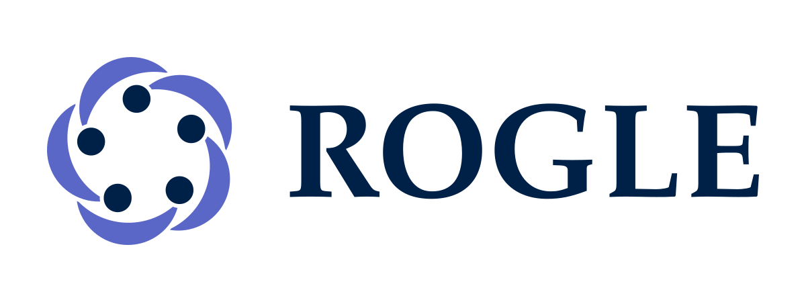

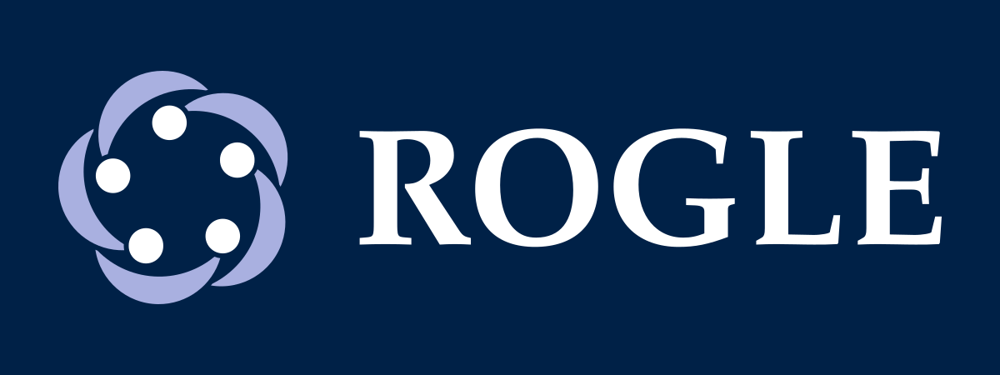
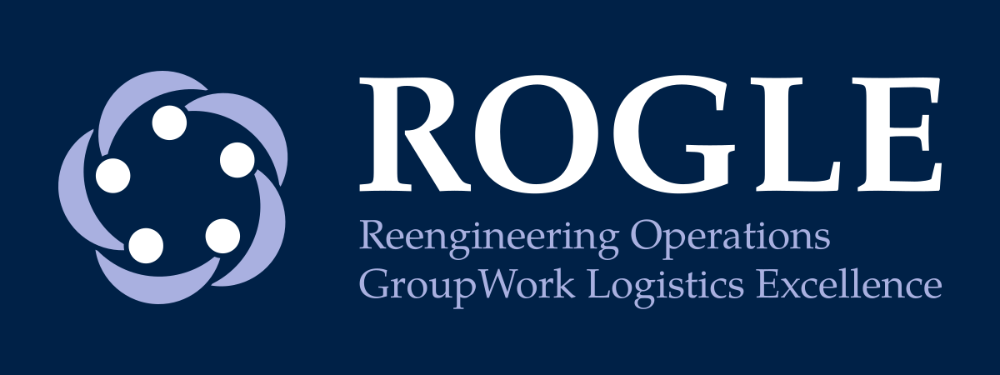
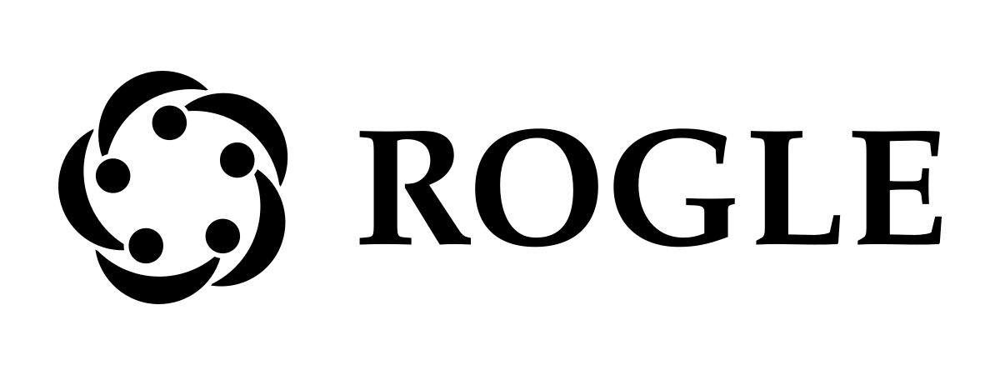
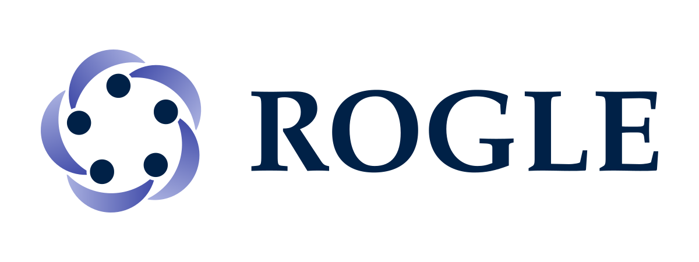
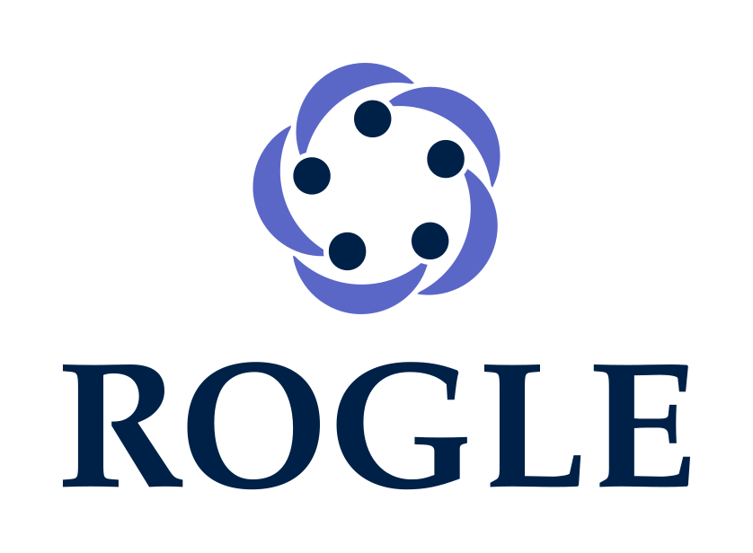

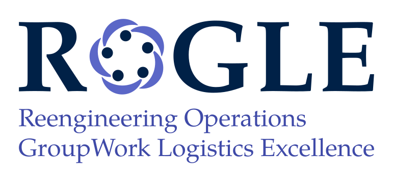
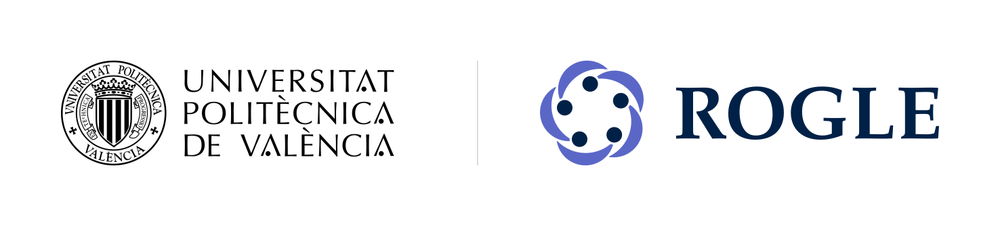
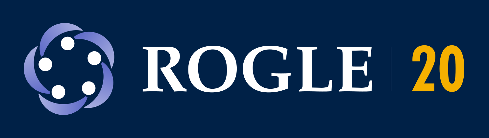
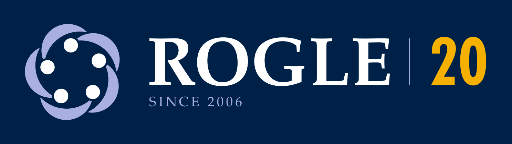
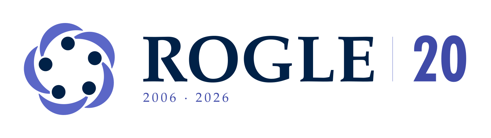


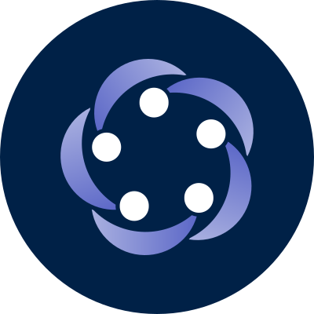
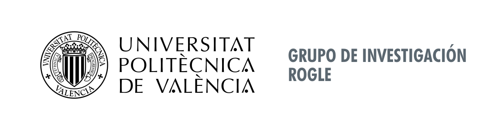


Color
La paleta usa Oxford Blue y tres índigos. El ámbar solo va sobre Oxford Blue. Pulsa un valor para copiarlo. Los valores CMYK son los del kit de imprenta (aproximados, perfil FOGRA39): para imprimir, usa el kit.
Oxford Blue
Personas del isotipo, nombre, textos y fondos.
- HEX
#002147 - RGB
0, 33, 71 - CMYK
100, 87, 43, 47
- HEX
Índigo
Descriptor, enlaces y titulares de apoyo.
- HEX
#3F4AA8 - RGB
63, 74, 168 - CMYK
86, 75, 0, 0
- HEX
Índigo medio
Medias lunas en positivo.
- HEX
#5B67C7 - RGB
91, 103, 199 - CMYK
73, 62, 0, 0
- HEX
Índigo claro
Medias lunas y descriptor en negativo. Nunca texto sobre blanco.
- HEX
#A9B0E0 - RGB
169, 176, 224 - CMYK
37, 30, 0, 0
- HEX
Ámbar
Solo la cifra 20 y los filetes, siempre sobre Oxford Blue.
- HEX
#F5B000 - RGB
245, 176, 0 - CMYK
2, 34, 96, 0
- HEX
Gris UPV 431
Nombre del grupo en la firma institucional de la UPV.
- HEX
#5B6770 - RGB
91, 103, 112 - CMYK
63, 47, 40, 28
- HEX
Blanco
Fondo y negativos.
- HEX
#FFFFFF - RGB
255, 255, 255 - CMYK
0, 0, 0, 0
- HEX
Separador
Línea entre la marca UPV y la marca ROGLE.
- HEX
#CFCFCF - RGB
207, 207, 207 - CMYK
no definido
- HEX
Tipografías
La marca tiene dos reglas, según el medio.
- Documentos y presentaciones: Palatino y Gill Sans. Palatino va en el texto y en todos los títulos, en negrita. Gill Sans solo va en lo secundario (etiquetas, pies, cabeceras de tabla). Son fuentes comerciales; sin ellas, se usan sus clones libres, TeX Gyre Pagella (licencia GUST) y Gillius ADF.
- Web: Poppins e Inter. Esta web usa Poppins (titulares, negrita) e Inter (texto, menú y etiquetas). Son las fuentes web de la UPV y tienen licencia SIL OFL 1.1. Documentos y presentaciones siguen con Palatino y Gill Sans.
- Poppins e Inter (web)
Fuentes originales (TTF) de la web, con la licencia SIL OFL 1.1.
- TeX Gyre Pagella y Gillius ADF (respaldo)
Clones libres de Palatino y Gill Sans para documentos, con sus licencias.
Licencias de las fuentes de esta web: Poppins (OFL 1.1) e Inter (OFL 1.1).
Reglas de uso
Resumen de las reglas de la marca. La especificación completa está en el manual de marca.
Área de protección
Deja alrededor de la marca un espacio libre igual a 0,25 veces la altura del isotipo.
Tamaños mínimos
Isotipo: 16 px en pantalla y 5 mm impreso (hasta 48 px, usa el favicon). Horizontal: 160 px o 30 mm de ancho. Con descriptor: 320 px o 60 mm.
Convivencia con la UPV
La marca UPV va a la izquierda y ROGLE a la derecha, con la misma altura, separadas por una línea. ROGLE nunca es mayor que la UPV. La marca UPV no se modifica.
Color
El ámbar solo va sobre Oxford Blue. Oxford Blue e índigo no se tocan: los separa aire blanco. El degradado solo se usa en pantalla.
Indeformable e indivisible
El isotipo y el nombre forman un conjunto con proporción y separación fijas. No los separes ni los estires.
Qué no hacer
No cambies los colores, no añadas sombras ni efectos, no gires la marca, no la pongas sobre fondos que no contrasten y no uses ámbar sobre blanco.
Plantillas descargables
Word y PowerPoint
Para Office en Mac y Windows. Usan Palatino y Gill Sans MT; si faltan, Office las sustituye.
- PowerPoint (plantilla)
Patrón y 91 diseños de estilo consultora, con cinco variantes de indicador de sección.
- Tema de Office (.thmx)
Colores y fuentes de la marca para Word y PowerPoint.
- Word: documento académico
Portada con QR, «Cómo citar», puntos clave y resumen.
- Word: documento de trabajo
Informe técnico con la firma institucional UPV en la portada.
- Word: margen ancho
Datos de publicación y notas en el margen derecho.
- Word: carta
Carta A4 con membrete y pie con la dirección del grupo.
Carta, informe, presentaciones y póster
Cada archivo ZIP conserva la estructura de carpetas de la plantilla, porque sus rutas son relativas. Descomprímelo y sigue el README de su carpeta.
- Carta (LaTeX)
Carta A4 con LuaLaTeX. Incluye la plantilla, su README y los logotipos y estilos que usa.
- Informe técnico (Quarto + PDF)
Plantilla template.qmd con cabecera, portada, bibliografía y figura de ejemplo.
- Presentaciones (Reveal.js y Beamer)
Plantilla Quarto con tema Reveal.js y Beamer, logos de la UPV y cinco indicadores de sección.
- Póster (Typst)
Póster científico con Typst. Incluye los logotipos que usa.
Estilos para Quarto y LaTeX
- _brand.yml (Quarto)
Colores, tipografía y logotipo para Quarto. Los logotipos se leen de la carpeta brand/logos del kit.
- rogle-colors.sty (LaTeX)
Colores de la marca para LaTeX.
- rogle20-fonts.sty (LaTeX)
Palatino y Gill Sans con respaldos libres.
Kit completo de imprenta
Es la entrega para una imprenta o un rotulista: cada logotipo en SVG, PDF (RGB y CMYK), EPS, DXF y PNG, la paleta y las tipografías.
- Kit completo de imprenta (alternativa A)
SVG, PDF RGB y CMYK, EPS, DXF y PNG de todos los logotipos; paleta (ASE, GPL, CSV, PDF); tipografías y catálogo. Es la entrega para una imprenta.
Vídeos y logotipo animado
Vídeos de presentación de la marca, en horizontal y en vertical, con música y con locución, y el logotipo animado en GIF y MP4. Los archivos pesan varios megabytes: se descargan al pulsarlos.
- Vídeo de presentación, horizontal (con música)
1920 × 1080, 75 segundos. Pantallas y proyección.
- Vídeo de presentación, horizontal (con locución)
Una voz sintética explica cada escena y la música baja mientras habla.
- Vídeo de presentación, vertical (con música)
1080 × 1920. Redes sociales y móvil.
- Vídeo de presentación, vertical (con locución)
Versión vertical con locución.
- Logo animado: giro (GIF)
El isotipo gira y aparece «ROGLE».
- Logo animado: giro (MP4)
El isotipo gira y aparece «ROGLE».
- Logo animado: entrada (GIF)
El isotipo rebota y el nombre entra desde la izquierda.
- Logo animado: entrada (MP4)
El isotipo rebota y el nombre entra desde la izquierda.
- Logo animado: «Fer rogle» (GIF)
Las cinco personas forman el corro.
- Logo animado: «Fer rogle» (MP4)
Las cinco personas forman el corro.
- Logo animado: 20 aniversario (GIF)
El contador pasa de 2006 a 2026 sobre Oxford Blue.
- Logo animado: 20 aniversario (MP4)
El contador pasa de 2006 a 2026 sobre Oxford Blue.


Manual de marca completo
El manual con todas las versiones, usos y decisiones está publicado en esta web.